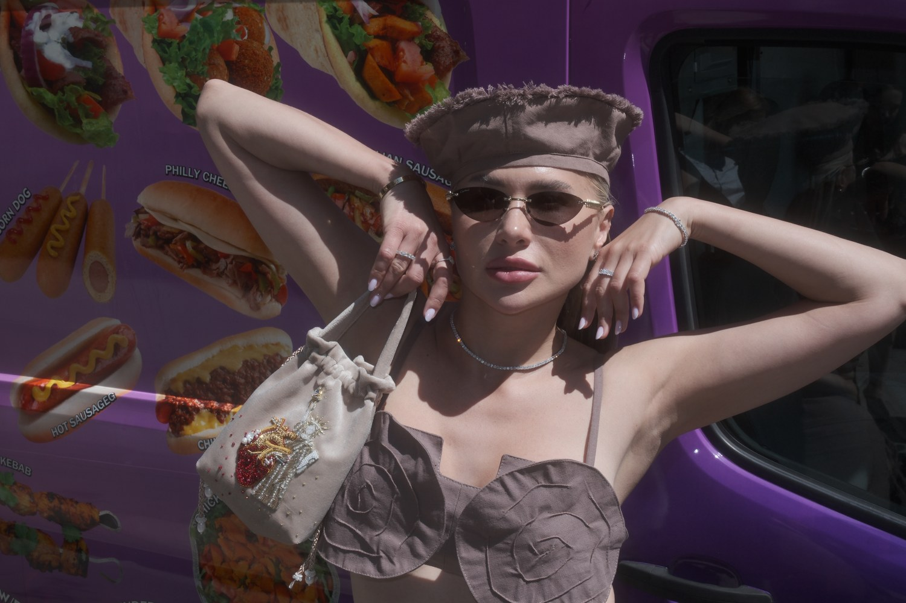
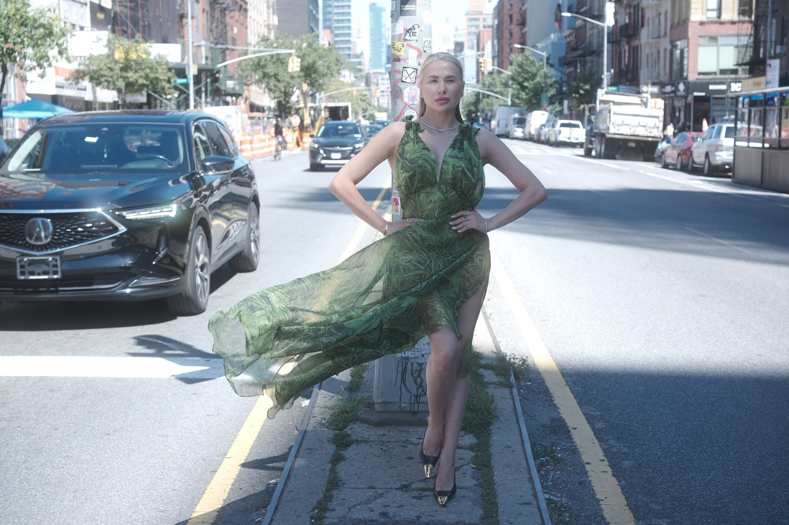
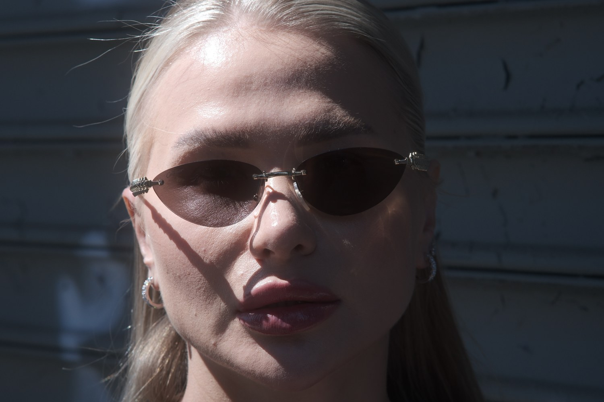
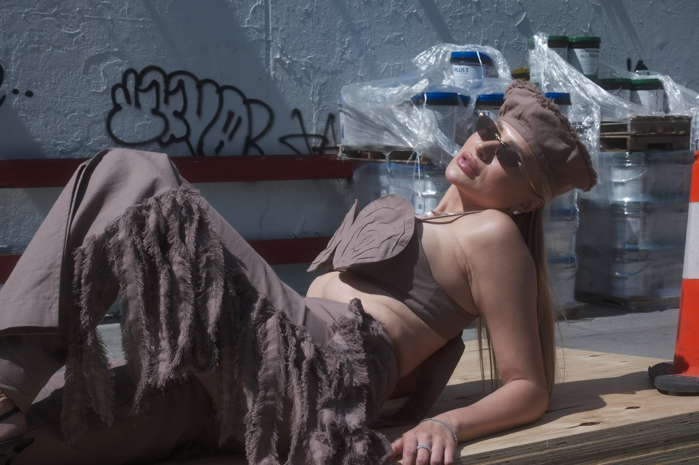
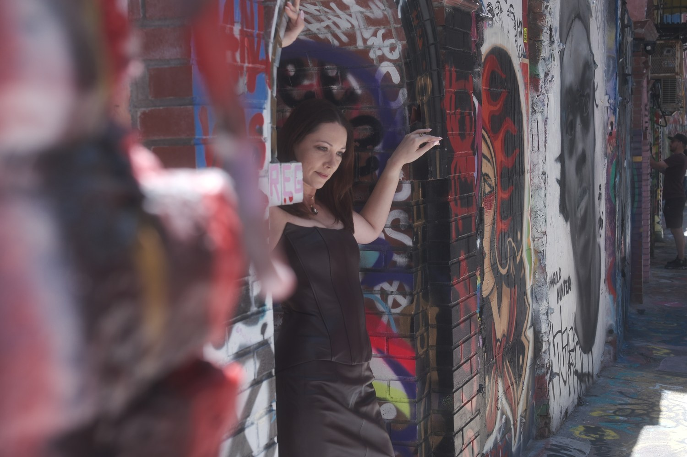
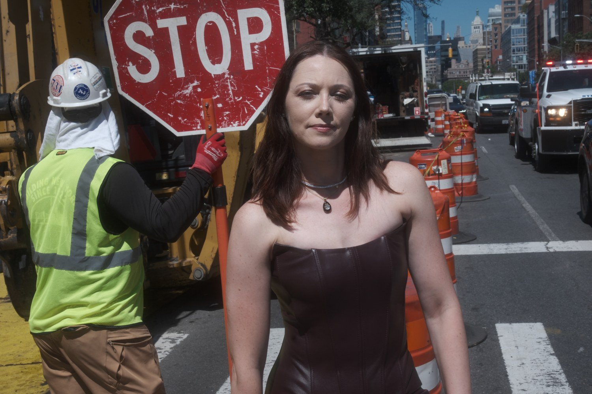
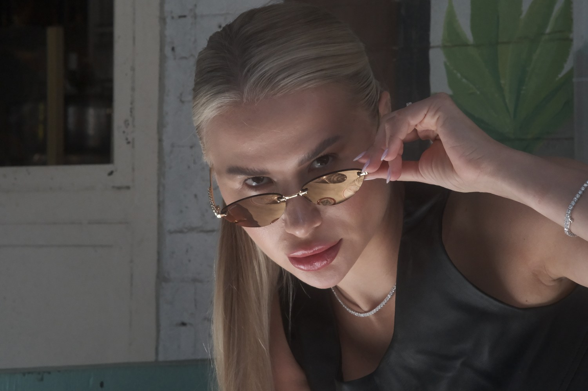
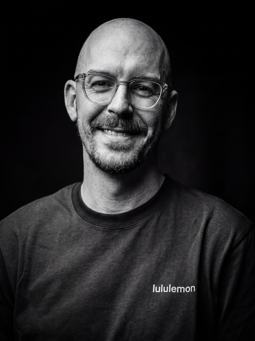

The Bald Dude Co. photographs fashion, people, and the beautiful disorder between them.
Brooklyn, NY
Available worldwide
Raw New YorkEnergy
40.7128° N / 74.0060° W
Direct flash Real moments
Enterthe work↘
Selected archive / 2026
The city
doesn’t pose.
001—007






No velvet rope required.
Beautiful
Disorder

Justin von BraunBrooklyn, New York
The photographer / 01
The Bald Dude behind the flash.
I’m Justin von Braun—a Brooklyn-based photographer, videographer, and founder of The Bald Dude Co. I photograph cinematic portraits, fashion, events, products, and intimate wedding stories for people and brands who want their images polished, but still alive.
My approach is built around strong light, thoughtful direction, and knowing when to let a real moment unfold. Red carpet, courthouse, backstage, sidewalk, or campaign: the goal is always an image with presence and a clear point of view.
More about Justin ↗What gets photographed
Available for
Bookings / collaborations / beautiful trouble